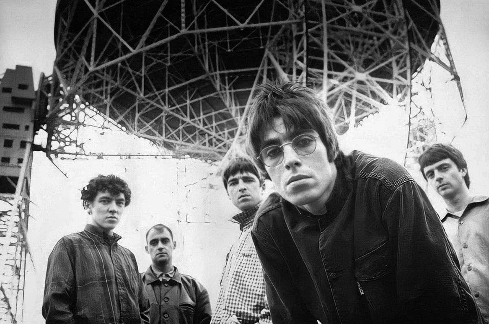
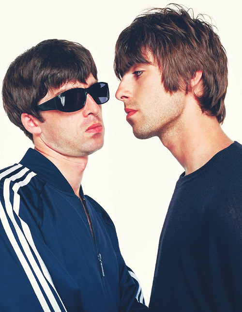

Un poco de la historia de Oasis
Oasis es una banda de rock inglesa ícono del Britpop, formada en Mánchester en 1990. En sus inicios, conocidos como Rain, el grupo contaba en sus filas con el cantante Chris Hutton, el guitarrista Paul Arthurs, el bajista Paul McGuigan y el baterista Daniel Alexander, a los que más tarde se unirían, en 1991, Liam Gallagher en la voz y Tony McCarroll como batería. El último en unírseles fue el hermano mayor de Liam, Noel Gallagher (a petición de su hermano) quien obtuvo el papel de compositor principal, guitarrista principal y cantante secundario. Debido a las 15 millones de copias vendidas de su álbum debut Definitely Maybe, a las 30 millones de copias vendidas de su segundo álbum (What's the Story) Morning Glory?1 y al hecho de que su tercer álbum Be Here Now se convirtiera en el disco más rápidamente vendido en la historia del Reino Unido con 520 000 copias vendidas tan solo el día de su puesta a la venta, Oasis ha sido considerado como uno de los grupos musicales más importantes en la historia musical de Reino Unido, habiendo entrado en varias ocasiones en el Libro Guinness de los récords (actualmente siguen teniendo uno de ellos en su haber). Publicaron 33 singles, de los cuales 9 alcanzaron el puesto n.º 1 de las listas británicas y 2 el puesto n.º 1 de las listas estadounidenses.
Integrantes originales de la banda formada en los años '90'
Los hermanos Gallagher fueron los líderes y compositores del grupo. Vendieron más de 100 millones de copias a nivel mundial3 y, hasta antes de la separación del grupo, Liam Gallagher era el único miembro original que había permanecido en él hasta que su hermano disuelve Oasis. Los hermanos Gallagher fueron también reconocidos por sus constantes peleas entre sí y con otros grupos y artistas, como Blur y Robbie Williams, las cuales propiciaron su aparición en múltiples ocasiones en la prensa sensacionalista.